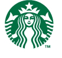

Responsibility
We've always believed that businesses can - and should - have a positive impact on the communities they serve.
So ever since we opened our first store in 1971, we dedicated ourselves to earning the trust and respect of our customers, partners and neighbors. How? By being responsible and doing things that are good for the planet and each other.
Community
As good neighbors we get involved with local efforts to bring people together and create positive change whenever we can.
Community Service
Youth
(STARBUCKS)RED
Starbucks Foundation
Ethos Water Fund
Learn More About Community
Environment
We’re finding ways to minimize our environmental footprint, tackle climate change, and inspire others to do the same.
Recycling
Energy
Water
Green Building
Climate Change
Learn More About Environment
Ethical Sourcing
We’re committed to buying and serving the highest-quality, responsibly grown, ethically traded coffee to help create a better future for farmers.
Coffee
Farmer Support
Tea
Cocoa
Store Products
Learn More About Ethical Sourcing Wellness
Our dedication to wellness means supporting policies and efforts to improve the health of our communities in addition to offering balanced food and beverage options to our customers. Learn More About Wellness Diversity By welcoming a diversity of people and ideas to our business, we create more opportunities for learning and success that benefit customers, partners (employees) and suppliers. Learn More About Diversity